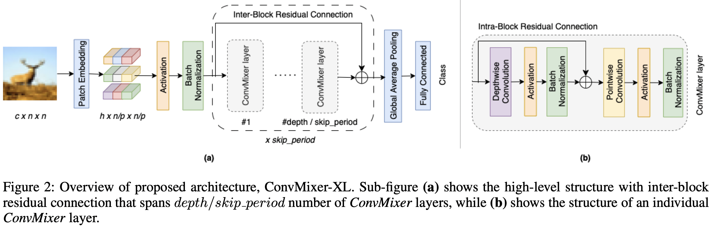
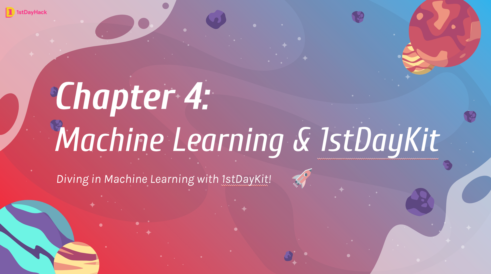

Not Research
For all things non-research related; also serving as the "others" bin of projects.
1 Leave Your Clothes Behind - LYCB

Abstract
The demand for assets in the virtual world as recently gained a lot of attention. We present a novel framework dubbed LYCB: Leave Your Clothes Behind that allows users to directly generate a 3D mesh object of garments from a monocular video using Neural Radiance fields. The proposed method fills the gap in literature by addressing issues such as accurately fitting on to foreign bodies for virtual try-ons and model complex cloth properties using Neural Radiance fields and physics-based simulations. This lets us transfer clothing type and bodies easily.
Github Repository
https://github.com/IamShubhamGupto/LYCB
Commentary
A project for ECE-GY 7123 Deep Learning, done together with Shubham Gupta.
Basically, we were trying to extract a 3D mesh of arbitrary clothing from a given 2D monocular input sequence (e.g. video). Similar approaches exist such as Structured Local Radiance Fields for Human Avatar Modeling where they tried to create clothed humans from monocular inputs in one-shot, and SCARF where they tried to implicitly disentangle the human body and garment meshes; both methods rely on implicit methods to render clothing deformations for each frame.
Feng, Yao, et al. “Capturing and animation of body and clothing from monocular video.” SIGGRAPH Asia 2022 Conference Papers. 2022.
Zheng, Zerong, et al. “Structured local radiance fields for human avatar modeling.” Proceedings of the IEEE/CVF Conference on Computer Vision and Pattern Recognition. 2022.
The key differentiation of LYCB is to instead rely on battle-tested clothing physics simulator (e.g. Blender) to perform the deformation instead! The motivation behind this approach is simple - in order for virtual try-on applications to leverage such approaches for real-world scenarios, accurate fitting and clothing deformation will be vital! (Wouldn’t want to have a new piece of clothing arrive and end up having to return it because it simply does not fit as shown prior 😢).
Obviously, our initial attempt (that was completed in ~3 weeks from end-to-end) is very rough still. For example, the rendered mesh is not very clean and inherits unwanted deformation from the input footage; key takeaway is that there are much to be improved upon still!
Regardless, we believe that such hybrid approaches of blending heuristic simulators for deformation + deep implicit methods would be a viable approach to build a virtual try-on platform where fit accuracy and consistency would be key (at least in the short term until we nail implicit clothing deformation physics!).
2 Activations And Augmentations: Pushing The Performance Of Isotropic ConvNets - ConvMixerXL

Abstract
This project focuses on improving the performance of isotropic Convolutional Neural Networks (ConvNets) for computer vision tasks. Specifically, we experiment with training a ConvMixerXL model on the CIFAR-10 dataset. ConvMixerXL is an extended version of the ConvMixer architecture, consisting of 66 layers and approximately 5 million parameters. To optimize the performance of ConvMixerXL, we conducted an ablation study where we explored different configurations of the architecture, as well as various augmentations and activation functions. Through our experiments, we found that applying augmentations and using the Swish (SiLU) activation function for deeper models yielded the best results. We achieved a top-1 accuracy of 94.52%.
Github Repository
https://github.com/datacrisis/ConvMixerXL
Commentary
This project was undertaken as part of the midterm project course ECE-GY 7123 Deep Learning, done together with Shubham Gupta. The primary objective is to improve upon the state-of-the-art isotropic ConvMixer architecture (published in the paper: Patches Are All You Need?) for multiclass classification tasks.
Trockman, Asher, and J. Zico Kolter. “Patches are all you need?.” arXiv preprint arXiv:2201.09792 (2022).
It’s nothing at all fancy, we had to work in accordance to the allowed tweaks and constraints outlined by the course instructor, which does not lend itself to a great degree of technical freedom. The focus was on fine-tuning and optimizing the vanilla ConvMixer architecture, rather than introducing novel or complex modifications.
Still, one thing that I am somewhat happy with is that my team and I pulled off the entire project and report writing within a week (and bagged a perfect score)! It’s not much, but it’s honest work. 🥔
3 Malaysia’s First Machine Learning Hackathon + Crash Course for Teens - 1stDayHack

Abstract
As delineated in the title, Malaysia’s First Machine Learning Hackathon + Crash Course targeted at teens in Malaysia (though this is from quite awhile ago!). Pulled it off together with 2 of my wonder accomplices, Edmond Yap and Chee Seng Leong!
All in all, I would say it was a great success, as we were able to bring together 60+ teenagers from across Peninsular Malaysia to learn and create for one whole week. The hackathon went very well and the responses were amazing; though the students’ submissions were even cooler, despite the the short time they have had to pick up Python and concepts of Machine Learning on the go! Couldn’t have been more proud of them 😎.
Github Repository
https://github.com/1stDayHack
Notes and Lesson Materials
My embarrassing notes
Commentary
The motivation behind the initiative is basically me trying to get younger sister to learn about programming, Machine Learning concepts, and to provide her with a first hand experience with hackathons! Unfortunately, I’ve found that no such initiatives exist at the time in Malaysia, so I got together with two of my trusty friends and did it ourselves 👩🏫.
I’m not really satisfied with the content and recording of the course (in fact, quite embarrassed by them still), as they are awfully boring, and are not as well structured and polished as I would like it to be.
In defense of past-me, past-me did do everything on his own for the course contents and materials - writing the FirstDayKit (FDK) library, writing the script for video lessons, creating written course materials (notes, tutorials, etc), recording all the lesson videos, and publishing the whole thing in ~1 month, mostly late in the evening after work in his bedroom, so the quality of the end result is not very good and contents are rough around the edges. However, I’m happy to report that he’s a much better (I think) presenter and developer now!
Regardless, it has been immensely satisfying overall and I’ll certainly be revisiting the project again in the future! Let’s aim for 200 participants this time?